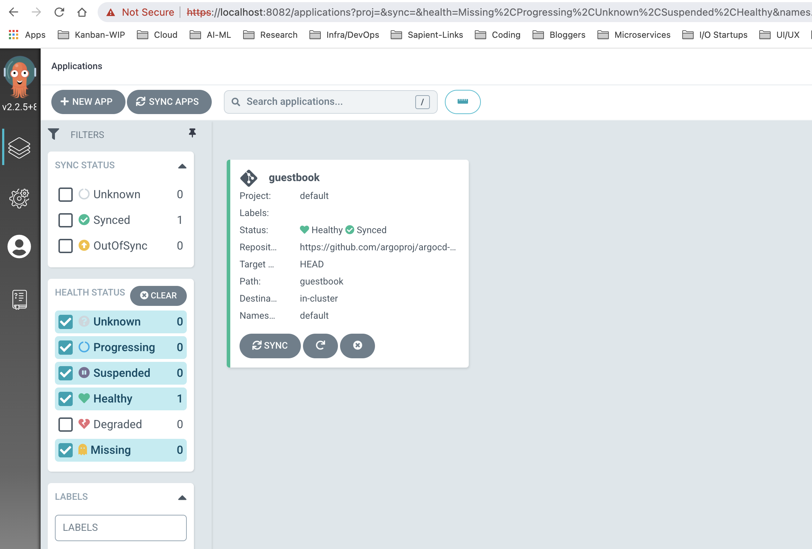
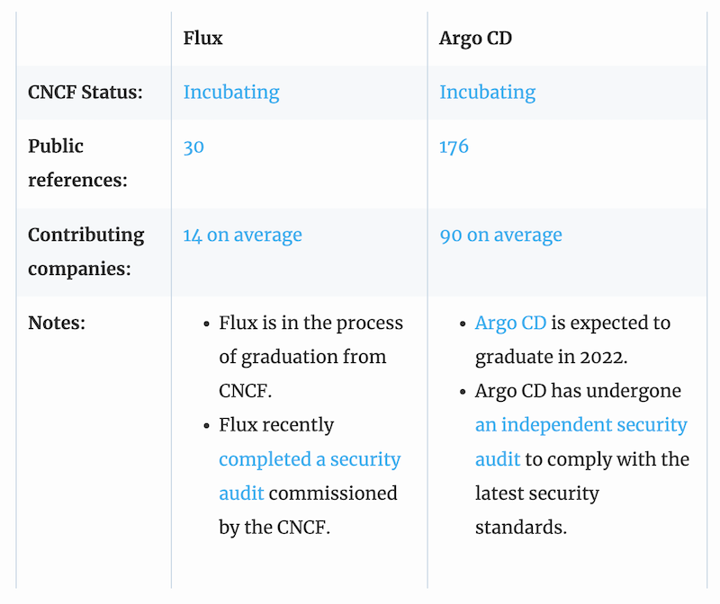

Argo CD #
Argo CD is a declarative, GitOps continuous delivery tool for Kubernetes. It is part of Argo project, which has 30+ repositories and has projects as Argo Workflow, Argo Rollouts, and Argo Events.
Key objectives #
- Application definitions, configurations, and environments should be declarative and version controlled.
- Application deployment and lifecycle management should be automated, auditable, and easy to understand.
Links #
Reviewed in Mar 2022
Argo CD Architecture #
 (Source: https://argo-cd.readthedocs.io/en/stable/)
(Source: https://argo-cd.readthedocs.io/en/stable/)
Local Setup #
- Instructions available at the Getting Started guide helps to setup locally
- Step 1: Setup Kubernetes (Minikube, Rancher Desktop, Docker Desktop)
- Step 2: Create namespace & deploy to Kubernetes cluster:
kubectl create namespace argocd
kubectl apply -n argocd -f https://raw.githubusercontent.com/argoproj/argo-cd/stable/manifests/install.yaml
- Step 3: Installed CLI on Mac:
brew install argocd
- Step 4: Added the Load Balancer and Port Forwarded for local access:
kubectl patch svc argocd-server -n argocd -p '{"spec": {"type": "LoadBalancer"}}'
kubectl port-forward --address 0.0.0.0 svc/argocd-server -n argocd 8082:443
Don’t forget to add 0.0.0.0 address otherwise you can’t use IP Address (alternative is to use localhost)
First Deployment #
- Example repository is available here: https://github.com/argoproj/argocd-example-apps
- User Id is admin (automatically setup initially)
- Password needs to be retrieved using:
kubectl -n argocd get secret argocd-initial-admin-secret -o jsonpath="{.data.password}" | base64 -d; echo
- Login to Console: https://localhost:8082
- Login to CLI: argocd login localhost:8082
- Deploy the app using CLI or use Dashboard:
argocd app create guestbook --repo https://github.com/argoproj/argocd-example-apps.git --path guestbook --dest-server https://kubernetes.default.svc --dest-namespace default`
Local Setup Snapshot #

Key Observations #
- Intuit started ArgoCD and currently using to run its production workload of 100+ nodes cluster
- Argo was accepted to CNCF on Apr, 2020 and is at the Incubating project maturity level.
- Companies using Red Hat, Google, Ticketmaster, WordPress, NVIDIA, Tesla, Adobe
- ArgoCD provides GUI in comparison to Flux CD
- Supports raw Kubernetes manifests (YAML), Kustomize, and Helm.
- Argo CD has RBAC-based access control and it is independent of Kubernetes.
- Deployment: Argo CD can be configured in a “pull” (instance of Argo CD on each cluster) or “push” (one Argo CD instance connecting to many clusters).
Compare ArgoCD vs. Flux #
